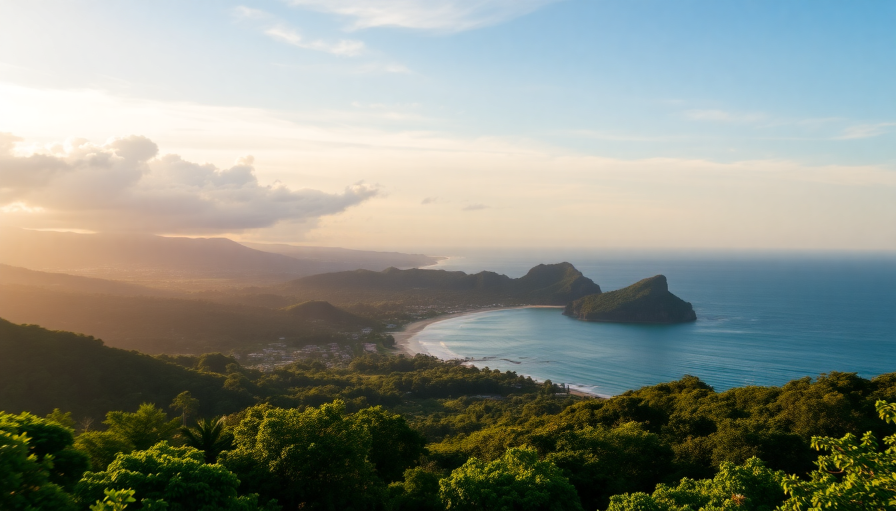

Best Beaches in Costa Rica: Pacific and Caribbean Guide

I spent six weeks driving the length of Costa Rica’s coastlines, from the dusty surf towns of Guanacaste to the laid-back Caribbean shacks near the Panama border. The Pacific side gets the hype, but the Caribbean side stole my heart. Here’s what I found at five of the most popular beach towns — the good, the overhyped, and the spots worth your time.
What’s the real deal with Tamarindo?
Tamarindo is the most developed beach town on the Pacific — and it shows. If you want nightlife, chain restaurants, and ATMs on every corner, you’ll feel at home. If you want solitude, look elsewhere. I stayed at Hotel La Paloma, a quiet spot a five-minute walk from the main drag, and it was fine for two nights.
The beach itself is wide and swimmable, but crowded. Surf lessons are everywhere; I booked one through Witch’s Rock Surf Camp and the instructors were solid. For food, skip the tourist-trap spots on the main strip and walk to La Oveja Negra for wood-fired pizza. If you have a rental car, drive 15 minutes north to Playa Conchal — the sand is crushed seashells, the water is turquoise, and it’s way less packed.
Best for: first-time visitors who want infrastructure and nightlife. Not for: anyone seeking quiet or raw nature.
Is Manuel Antonio worth the entrance fee?
Yes, but only if you go early. Manuel Antonio National Park opens at 7 AM, and the crowds arrive by 9. I got there at 6:45, paid the $18 entry, and had the main beach — Playa Manuel Antonio — almost to myself for an hour. The white sand and calm water are stunning. Monkeys will steal your stuff if you leave it unattended. I watched a capuchin grab a bag of chips from a German tourist who turned his back for ten seconds.
After the park, I grabbed lunch at El Avión, a restaurant built inside a real C-123 cargo plane. It’s kitschy, but the ceviche is legit and the ocean view is unbeatable. For accommodation, I recommend Hotel Costa Verde — the rooms are set into the hillside and some have balconies overlooking the jungle. Book ahead; everything fills up.
Best for: wildlife lovers and beach day-trippers. Not for: budget travelers (everything is pricey here).
What’s the vibe in Santa Teresa?
Santa Teresa is the surf-and-yoga town that somehow still feels sleepy. The main road is dirt, the power goes out during rainstorms, and the sunsets over the Pacific are ridiculous. I spent five days at Selina Santa Teresa, which is fine for digital nomads but loud at night. Next time I’d rent a house through Airbnb closer to Playa Hermosa — the southern end of the beach is quieter.
Surfing is the main event. I took two lessons with Costa Rica Surf Camp and was catching green waves by day two. The break is consistent year-round, but December through April has the cleanest swells. For food, Brisa Azul has the best fish tacos I ate in the country — simple, fresh, and cheap. Avoid the sushi places; I got food poisoning from one.
Getting there is a mission. It’s a 5-hour drive from San José on roads that are half potholes, half gravel. Fly into Tambor Airport instead if you can; Sansa runs short hops from San José for about $100.
Best for: surfers, yogis, and people who don’t mind rough roads. Not for: anyone on a tight schedule.
How does Puerto Viejo compare to Cahuita?
These two Caribbean towns are only 20 minutes apart, but they feel different. Puerto Viejo is livelier — reggae bars, bike rentals, and a mix of backpackers and expats. I stayed at Rocking J’s Hostel for the social scene, which was fun for two nights. The beach in town, Playa Negra, is dark sand and good for walking but not swimming — the rip currents are strong.
Cahuita is smaller and more relaxed. The main draw is Cahuita National Park, where you pay by donation and hike a trail along white-sand beaches through jungle thick with howler monkeys. I saw a sloth in the first ten minutes. The park’s Playa Blanca is the best swimming beach on the Caribbean side — calm, clear, and almost empty on weekdays.
For food in Cahuita, Miss Miriam’s serves incredible Caribbean rice and beans with coconut milk. In Puerto Viejo, Soda Italiana does wood-fired pizzas that are worth the wait. Skip the tour operators selling snorkeling trips to Punta Uva; just rent a mask and fins from GreenLac and walk in from the beach yourself.
Best for: Puerto Viejo for nightlife and food variety; Cahuita for nature and quiet. Both are worth a visit.
When is the best time to visit each coast?
Timing matters more in Costa Rica than almost anywhere else I’ve traveled. The Pacific coast has a dry season from December to April and a green (rainy) season from May to November. I visited Tamarindo and Santa Teresa in January — zero rain, blazing sun, and packed beaches. Manuel Antonio in November was rainier but the jungle was lush and the crowds were thin.
The Caribbean coast flips the script. It rains most from December to March and is driest from September to November. I hit Puerto Viejo and Cahuita in early December and got afternoon showers every day, but the mornings were perfect. If you want guaranteed sun on the Caribbean, go in September or October — which is also the cheapest time to fly.
One hard lesson: the roads between coasts can be brutal. The drive from San José to Puerto Viejo took me six hours due to landslides. Budget extra travel time no matter when you go.
FAQ
Is it safe to swim at all these beaches? No. Pacific beaches like Tamarindo and Santa Teresa have strong rip currents. Always swim where locals do, and never alone. On the Caribbean side, Playa Negra in Puerto Viejo is dangerous for swimming — stick to Playa Blanca in Cahuita National Park or the calm coves at Punta Uva. I saw two rescues in one week on the Pacific side; take it seriously.
Do I need a rental car to visit these beaches? It helps, but it’s not required. You can take shuttles between Tamarindo, Manuel Antonio, and Santa Teresa. For the Caribbean, buses run from San José to Puerto Viejo for about $10. But a car gives you flexibility — I used mine to hit Playa Conchal and Playa Hermosa, which are hard to reach otherwise. Just know that 4x4 is strongly recommended for Santa Teresa and Cahuita.
Which beach is best for beginner surfers? Tamarindo and Santa Teresa both have gentle waves for beginners, but Tamarindo is more consistent and has more surf schools. I’d start there. Manuel Antonio’s beach inside the park is too calm for surfing. On the Caribbean side, the waves are smaller and less reliable — better for longboarders than true beginners.
Conclusion
- Tamarindo is convenient but crowded — go for the nightlife and surf schools.
- Manuel Antonio delivers stunning scenery and wildlife, but get there at dawn.
- Santa Teresa is a rough-road paradise for surfers and sunsets.
- Puerto Viejo has reggae vibes and good food; Cahuita has quieter beaches and better wildlife.
- Time your trip by coast: dry season on the Pacific (Dec–Apr), rainy season on the Caribbean (Sep–Nov).
- Skip the tour packages. Rent a car, bring cash, and talk to locals for the real spots.